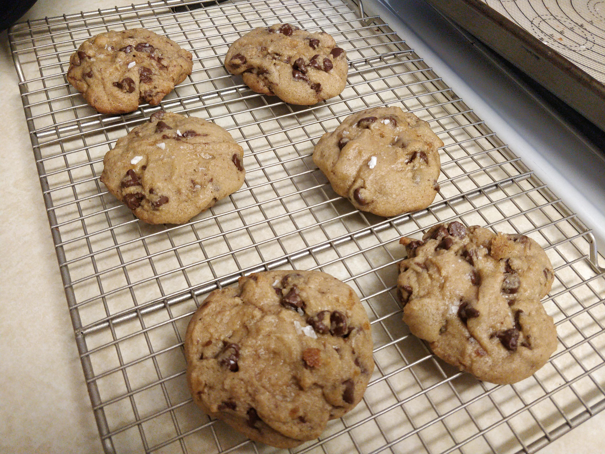

COOKIES

Shopping List
- 2 grams Unsalted butter [226 grams]
- ½ cup white sugar [100 grams]
- 1½ cups brown sugar [300 grams]
- 2 eggs
- 11 ½ ounces all purpose flour [313 grams]
- 1 Tbsp kosher salt
- ½ tsp baking soda
- ¾ tsp cinnamon
- chocolate
Przygotowanie :
- Start by browning 2 sticks of unsalted butter. Once brown, place in a measuring cup and refrigerate for 1 hour or until it’s re-solidified.
- In the bowl of a stand mixer, add the butter along with ½ cup of white sugar and 1 ½ cups of brown sugar. Mix well to combine.
- Next add 2 cold eggs to the mixture, and mix to combine.
- In a separate medium bowl, whisk together 11 ½ ounces of all purpose flour, 1 Tbsp of kosher salt, ½ tsp of baking soda, and ¾ tsp of cinnamon.
- Add half of dry ingredients to the stand mixer, mix to combine, and then add the other half of the dry ingredients. This helps keep your gluten down.
- Add your chocolate chips, stir just until everything is well combined and remove dough from mixer. Place in a bowl and refrigerate for at least an hour or as long as 2 days.
- Optional: You can toast some nuts and add those to your cookie dough as well.
- Roll your cookie dough into balls and then break in half and set on cookie sheet. This will help give the cookies a rustic look. Bake in a 180°C oven for 12-17 minutes or until they’ve reached your preferred doneness. Top with a little bit of sea salt.
- Let cool for a few minutes, serve and enjoy.
Optionaly:
during step 4 add 113 grams of coco powder